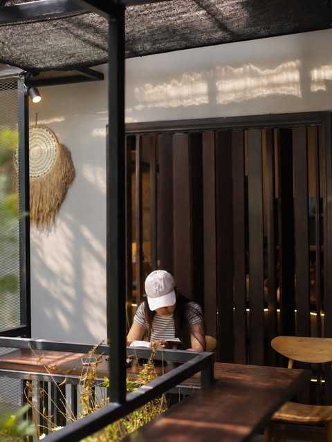
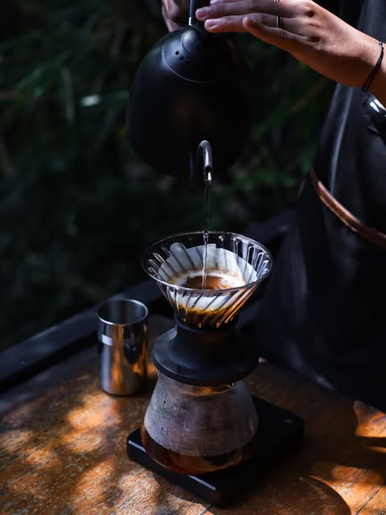

01
Work a little.
Exhale a lot.
A calm corner, a good coffee, and a change of scenery for the WFH or WFC kind of day.
A CHANGE OF PACE
A HOME SURROUNDED BY #NADTURE
Find your place among the green. Start with thoughtfully made coffee, stay for a good plate and a little longer by the river.
01 / THE FEELING
Tucked just far enough from the busy road, NAD feels like the kind of place you’re glad someone let you in on.
Follow the green, find a table by the river, and let the afternoon take its time. Come to catch up, work a little, celebrate something, or simply enjoy doing less.
Find your kind of moment
02 / MAKE YOURSELF AT HOME
The best plans are often the simple ones. Pick a seat that feels like you.
A calm corner, a good coffee, and a change of scenery for the WFH or WFC kind of day.
A CHANGE OF PACESettle beside the river, surrounded by bamboo and the sort of green that slows your breathing.
A LITTLE CLOSER TO NATUREIndoor and open-air seats make space for lunch dates, long catch-ups and special little celebrations.
GOOD COMPANY, ALWAYS04 / KIND WORDS
“Tempatnya sangat nyaman dan tenang, cocok untuk santai atau kerja.”
“The place is beautiful… cozy, with a lovely view of the river and lush bamboo trees.”
“Semuanya ramah dan harganya masih ramah di kantong.”
05 / YOUR TABLE IS WAITING
Look for NAD in Batubulan, Gianyar. It’s a neighborhood hideaway, so opening the map first is a lovely idea.
Open directions BATUBULAN, GIANYAR · BALI OPEN 07.30–21.30 WITA